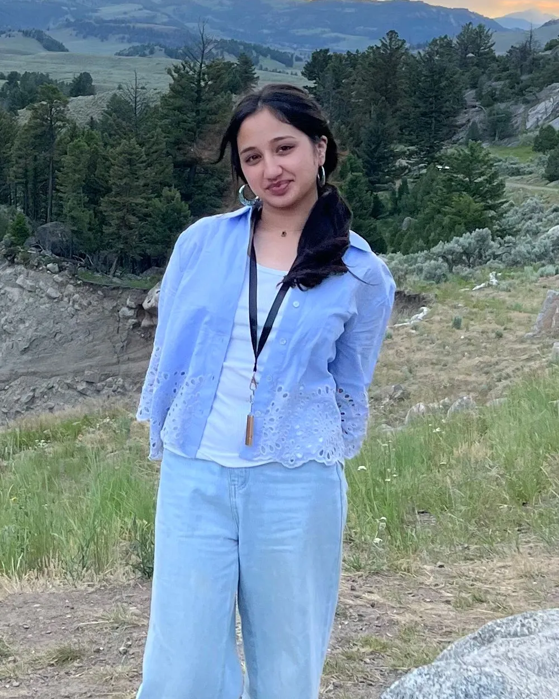

A shadowing day should show a student whether medicine fits.
Most high schoolers who want to become doctors send email after email to land a single day in a clinic. Once they arrive, the physician has a full schedule and no program to follow, and the student goes home with little to show for it.
Shadow Pre-MD is a free guide built from a survey of 43 practicing physicians and five peer-reviewed studies on how students learn from clinical observation.
Dozens of emails for one yes, then a day spent in the corner
Hospitals publish no standard guidelines for hosting a high schooler, and physicians barely have time for their own patients. Students feel it in three ways.
The spots are scarce
With no formal program to apply to, a student's only way in is a cold email to a busy physician and a long wait for a reply.
The day goes unused
A physician who agrees to host rarely has time to explain what the student is watching, and nobody has told either of them what the day should include.
The frustration builds
Students come away frustrated by how few chances exist and disappointed that the ones they did get taught them so little.
A student who is serious about medicine shouldn't have to email physicians endlessly with no hope of an answer.
Students who never get a useful look at the work stay unsure about medicine, and they never form a strong picture of themselves as a physician.
What 43 physicians said about hosting high schoolers
Practicing physicians across medical and surgical specialties answered an online survey about the students they have hosted, what those students did, and what would make hosting easier.See reference 1
63%
had already hosted
Nearly two in three had supervised a high school student before taking the survey.
70%
chose direct observation
Watching patient care firsthand was rated the most meaningful activity for a student.
90%+
would say yes
More than nine in ten reported they would supervise a student if appropriate resources were available.
What gets in the way
Share of physicians naming each barrier
What students get to do
Share of physicians offering each activity
Physicians named a student orientation handbook and clear institutional guidelines as the most helpful resources. Among those who had never hosted a student, the ones who rated standardized guidelines as useful were also more willing to host (Spearman ρ = 0.63, p ≈ 0.009). Of the 43 respondents, 56% practiced internal medicine or a subspecialty and 19% were surgeons.

Meet Zoha
Zoha Waheed went through the same search.
Zoha is a high school student who has shadowed seven physicians across endocrinology, rheumatology, pulmonology, and infectious disease. Even with those days secured, she found it hard to get the most out of them.
So she read five peer-reviewed studies on clinical shadowing, surveyed 43 practicing physicians about what helps and what gets in the way, and submitted her findings as a research abstract to the 2027 Medical Education Innovation Conference. The guide puts what she learned into steps another student can follow.
Three steps to a shadowing day that counts
You have done the hard part if a physician has said yes. Here is how to make the day worth it.
-
Download the free guide
It costs nothing and asks for nothing. Save it before your first day in the clinic.
-
Follow each step
The guide walks you through what to do before, during, and after you shadow.
-
Get more from your shadowing
Leave with a clear view of the work and of whether you want it.
Read through the guide and follow its steps, and you will take away something useful from your shadowing.
Three habits the research backs
The guide leans on published studies of students in clinical settings. These findings came up again and again.
Write about each day
Keep a journal or take notes while you shadow. Written reflection helps students analyze what they saw and spot what they still need to learn.See reference 2See reference 3
Ask your questions
Students who take the initiative and ask, instead of staying silent, get more value from the experience.See reference 4
Know the plan for the day
Shadowing works better when the student is introduced to the team and the patients, and a clear structure is set from the start.See reference 4
From frustrated to certain about what comes next
Most students start this search disappointed by how little their shadowing has given them. A day used well can settle the question they came in with.
- Make up your mind about medicine.
- Find a specialty you can see yourself in.
- Learn what a physician's day-to-day life looks like.
- Bring a sharper focus to the rest of your schooling.
Make your next shadowing day count
The guide is free. Read it before you walk into the clinic.
Works cited
- Waheed, Z. S. (2026). Physician perspectives on high school shadowing: Barriers, educational value, and opportunities for standardization. Cross-sectional survey of 43 practicing physicians. Abstract submitted to the 2027 Medical Education Innovation Conference.
- Mann, K., Gordon, J., & MacLeod, A. (2009). Reflection and reflective practice in health professions education: A systematic review. Advances in Health Sciences Education, 14(4), 595–621. https://doi.org/10.1007/s10459-007-9090-2
- Mafinejad, M. K., Ebrahimpour, F., Sayarifard, A., Shahbazi, F., & Gruppen, L. (2022). Reflection on near-peer shadowing program: Impact on operating room student's perception of their future profession. BMC Medical Education, 22. https://doi.org/10.1186/s12909-022-03891-w
- Estes, M., et al. (2026). From fly on the wall to future colleagues: Best practice recommendations for medical student shadowing programs. AEM Education and Training, 10(3). https://doi.org/10.1002/aet2.70214